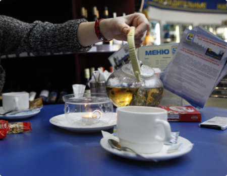
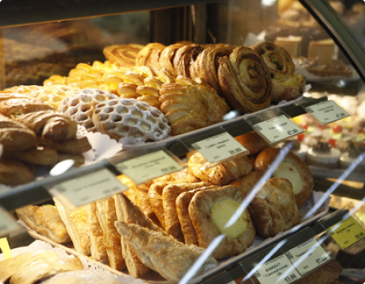

Кафе

Всегда сытно и уютно!
На автозаправочных комплексах ТРАССА работает круглосуточное кафе, в котором вы можете
не только перекусить, но и полноценно пообедать. Также вам всегда будет предложено
выпить чашечку ароматного кофе со свежей выпечкой собственного производства. Вся выпечка
представленная на АЗС ТРАССА изготовлена из экологически чистых продуктов по специально
разработанной технологии на Фабрике-кухня, расположенной в Раменском районе Московской
области. Меню кафе поразит вас своим разнообразием, а обстановка – домашним уютом и
современным интерьером.

Кафе — сильная сторона!
Несомненное преимущество кафе – комплексные обеды с большим выбором первых и вторых
блюд. Для авто-путешественников и дальнобойщиков полноценный обед является
необходимостью, которую практически невозможно найти на других АЗС, но на заправках
ТРАССА вы сможете выбрать обед на ваш вкус. Для посетителей ограничивающих себя в еде
или придерживающихся религиозных постов в кафе есть специальное постное меню. Для
любителей фаст-фуда кафе предлагает хот-доги и сэндвичи

Выпечка домашнего производства!
Встретить утро в кафе ТРАССА можно вкусным европейским завтраком. В сети кафе на АЗС
представлен широкий ассортимент выпечки. По вашему желанию – бельгийская, французская,
датская выпечка и различные пирожные. Так же на автозаправках ТРАССА продается выпечка
домашнего производства, которая пользуется огромной популярностью. Отличное дополнение к
выпечке – кофе. Тем более что в кафе вы сможете купить кофе из первоклассных сортов. На
выбор – 12 видов, а также горячий шоколад и настоящий китайский чай для тех, кто
предпочитает обходиться без кофеина. Утолить жажду можно газированными напитками,
молочными коктейлями и свежевыжатыми соками.